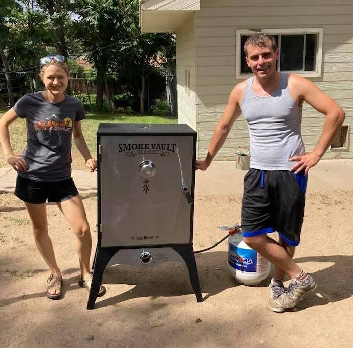

Our Story
Pitmaster Justin’s BBQ journey began over a decade ago with a simple backyard setup. What started as a hobby—grilling for friends and family—quickly turned into a deep passion for the craft and culture of barbecue. Over the years, Justin has refined his techniques and now brings that same backyard flavor straight to your event.
Smoke on the Go promises the full pit-smoked experience of a brick-and-mortar BBQ joint, wherever you are. Check our calendar to find us at public events, or contact us to bring the smoke to your private gathering. We’re ready to roll up, fire up, and serve up!
